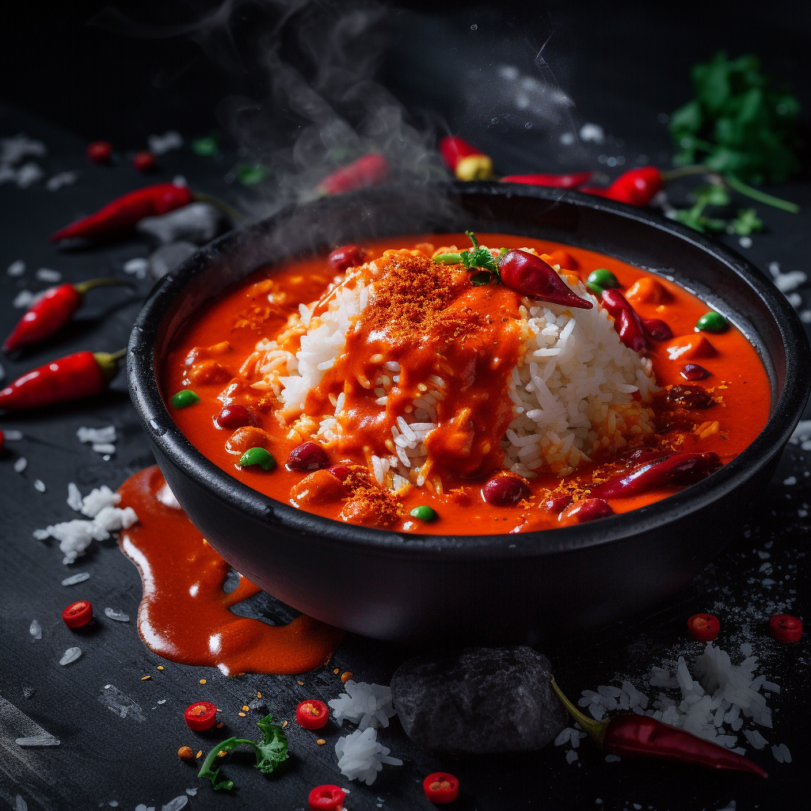

Curry of Life

Description
This mouth-watering dish is a favorite of none other than Rock Lee, and
for good reason! The Curry of Life is a spicy and flavorful curry made with a
secret blend of spices and ingredients that will leave your taste buds
tingling with delight.
Ingredients
- 2 tbsp cooking oil
- 1/2 lb of beef stew meat
- Salt
- 1 yellow onion, sliced
- 2 tsp cayenne pepper
- 8 oz crushed tomatoes
- 2 carrots, peeled and chopped
- 1 Russet potato, peeled and cubed
- 2 1/4 cups of beef stock
- Hot Curry Roux, 1 pack of S&B Curry
- Hot sauce (any)
- Rice
Steps
- Why would you want to eat this? You are not Rock Lee. You are not
special.